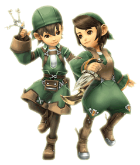

21 |
Jobs (Classi) |
 |
Gli avventurieri possono specializzarsi in diversi ruoli, chiamati "Jobs" (classi). Gli aspiranti avventurieri si trasformano in warriors (guerrieri) quando vengono scelti per il loro primo compito ufficiale.
Con il passare del tempo, appariranno dungeon in cui non basterà più la sola forza fisica per vincere. In questi casi è consigliabile chiedere ad alcuni avventurieri di cambiare classe di appartenenza. Per poter cambiar classe è necessario costruire nel regno alcune apposite strutture. Una volta fatto, ti sarà possibile affiggere una richiesta di cambio di classe per radunare gli avventurieri adatti a intraprendere la nuova classe. Qui sotto trovi elencate le quattro classi e le rispettive strutture. |
|
 ●
●  ● White Mage (Mago bianco)
● White Mage (Mago bianco)Guaritore per antonomasia, il mago bianco supporta il gruppo ed è indispensabile in una buona squadra di avventurieri! Per poter assegnare questa classe a un avventuriero è necessario costruire un "White Mage Temple" (Tempio di magia bianca).
| |
 ● Black Mage (Mago nero)
● Black Mage (Mago nero)Maestro delle forze elementali, il mago nero è abile nel lanciare incantesimi d'attacco sui nemici. Per poter assegnare questa classe a un avventuriero è necessario costruire una "Black Mage Academy" (Accademia di magia nera). |

● Thief (Ladro)
Il ladro è al contempo un esploratore e uno scopritore di tesori, può aprire le serrature dei forzieri e far evitare battaglie inutili al gruppo grazie alla sua furtività. Per poter assegnare questa classe a un avventuriero, è necessario costruire una "Gaming Hall" (Sala da gioco). |
Gli avventurieri che si accalcheranno vicino alle bacheche dove hai affisso la richiesta di cambio classe, ti chiederanno se intendi assegnargli la nuova classe.
Attenzione: quando gli avventurieri cambiano classe, perdono tutte le abilità precedentemente imparate. Pensaci bene prima di impartire l'ordine! |
 |
 |
 |